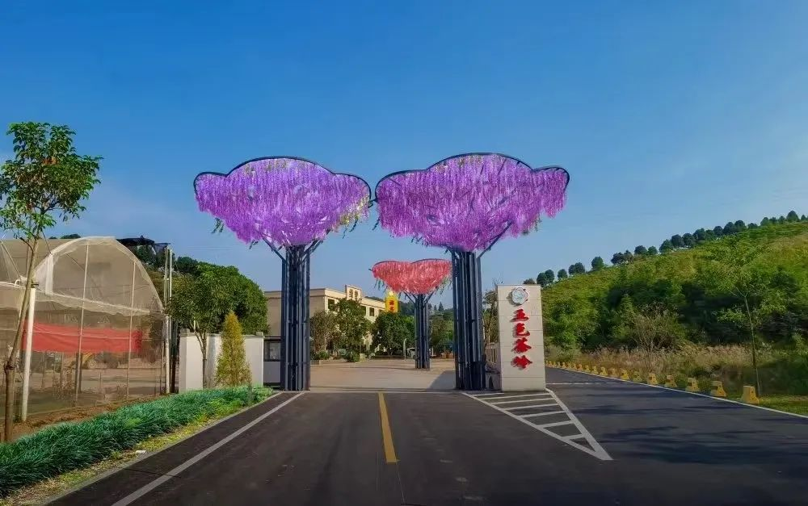

龙川，一座驶入高质量发展“快车道”，发展势头强劲，前景无限广阔的城市
千年古县、原中央苏区县、全国重点生态功能区、全国油茶示范县……(点击了解更多)
要闻
龙川县：全国义务教育发展基本均衡县、广东省教育强县......
嶅山溪谷 佗城考棚

五色茶岭 鹿湖
龙川县致力于推动产业升级，推动制造业转型升级，扩大第三产业发展，以现乡村振兴。
工业园和农业园
龙川县骄傲地传承着丰富多彩的文化遗产，让我们一起探索这段历史吧！
杂技、木偶、马灯舞……一事、一物、一门手艺，都有着它们的故事和魅力，传承着中华文化的血脉。
木偶戏和杂技